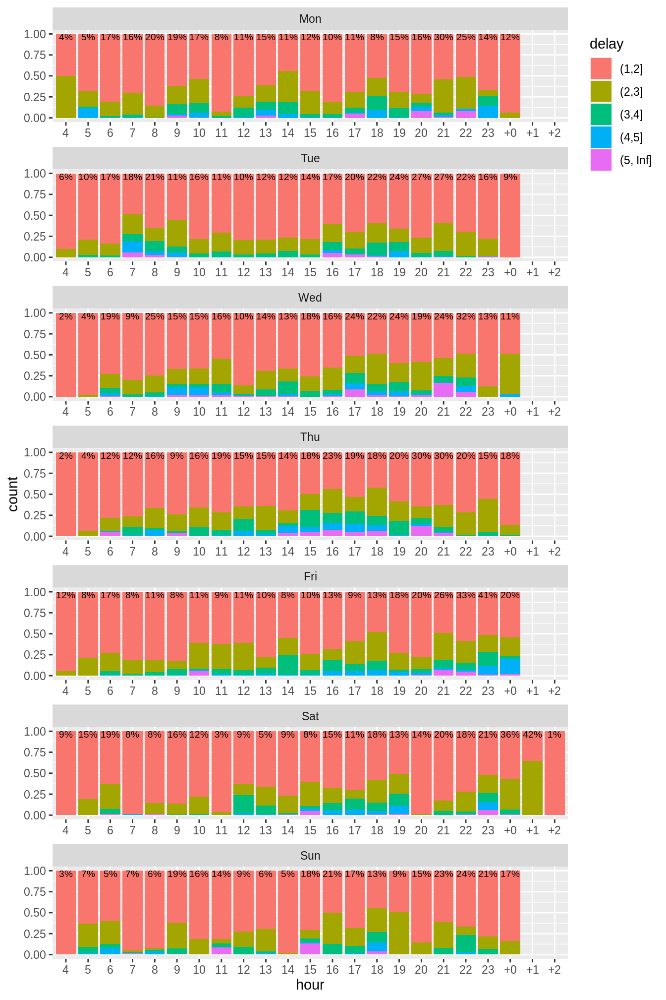

1
Introduction
2
Results by line
2.1
Analysis of delays for line 2
2.1.1
Delays by hour for each weekday
2.2
Analysis of delays for line 3
2.2.1
Delays by hour for each weekday
2.3
Analysis of delays for line 4
2.3.1
Delays by hour for each weekday
2.4
Analysis of delays for line 5
2.4.1
Delays by hour for each weekday
2.5
Analysis of delays for line 6
2.5.1
Delays by hour for each weekday
2.6
Analysis of delays for line 7
2.6.1
Delays by hour for each weekday
2.7
Analysis of delays for line 8
2.7.1
Delays by hour for each weekday
2.8
Analysis of delays for line 9
2.8.1
Delays by hour for each weekday
2.9
Analysis of delays for line 10
2.9.1
Delays by hour for each weekday
2.10
Analysis of delays for line 11
2.10.1
Delays by hour for each weekday
2.11
Analysis of delays for line 12
2.11.1
Delays by hour for each weekday
2.12
Analysis of delays for line 13
2.12.1
Delays by hour for each weekday
2.13
Analysis of delays for line 14
2.13.1
Delays by hour for each weekday
2.14
Analysis of delays for line 15
2.14.1
Delays by hour for each weekday
2.15
Analysis of delays for line 17
2.15.1
Delays by hour for each weekday
VBZ Delays
2.9
Analysis of delays for line 10
2.9.1
Delays by hour for each weekday
The following plot shows the distribution of delays by hour for each weekday.
